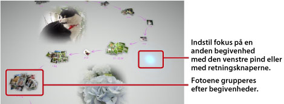

Visning af fotos
Når du starter Photo Gallery, analyseres og grupperes alle de fotos, der er gemt på PS3™-systemets systemlager automatisk efter begivenheder. Foto grupperes efter begivenheder på baggrund af fotoenes dato og klokkeslæt.
Vælg begivenheder
Brug den venstre pind eller retningsknapperne til at gå fra foto til foto eller fra begivenhed til begivenhed. Tryk på  -tasten for hvert valg for at vælge flere fotos eller begivenheder.
-tasten for hvert valg for at vælge flere fotos eller begivenheder.

Skift fotovisningsmetode
Hvis du vil ændre den måde, som fotoene vises på, skal du vælge grupper eller begivenheder og trykke på  -tasten. Visningen ændres som vist på følgende billeder. Hvis du vil skifte til en forrig visning, skal du trykke på
-tasten. Visningen ændres som vist på følgende billeder. Hvis du vil skifte til en forrig visning, skal du trykke på  -tasten.
-tasten.
Tip
Når et foto vises i fuld skærmtilstand, kan du få adgang til kontrolpanelet i kategorien  (Foto) på skærmen XMB™ ved at klikke på
(Foto) på skærmen XMB™ ved at klikke på  -tasten. Du kan derefter bruge de tilgængelige kontrolpanelindstillinger på det viste foto.
-tasten. Du kan derefter bruge de tilgængelige kontrolpanelindstillinger på det viste foto.
Visning af fotos som et diasshow
Hvis du vil afspille et diasshow med dine fotos, skal du vælge en spilleliste eller begivenhed fra [Biblioteksområde], tryk på -tasten, og vælg derefter  (Slideshow). Indstil de nedenstående indstillinger for diasshowet, og vælg derefter [Start].
(Slideshow). Indstil de nedenstående indstillinger for diasshowet, og vælg derefter [Start].
| Slideshow stil | Vælg, hvordan fotoene skal vises i diasshowet. |
|---|---|
| Slideshow hastighed | Vælg diasshowets hastighed. |
| Sortér | Vælg fotoenes rækkefølge. |
| Slideshow-musik | Vælg baggrundsmusik til et diasshow fra den musik, der leveres med programmet Photo Gallery. |
 |
Vælg baggrundsmusik til et diasshow fra kategorien  (Musik) på skærmen XMB™. (Musik) på skærmen XMB™. |
Tips
- Under afspilningen af et diasshow kan du få adgang til kontrolpanelet i kategorien (Foto) ved at trykke på -tasten. Du kan derefter anvende de tilgængelige kontrolpanelindstillinger på diasshowet.
- Når fotoene vises i [Biblioteksområde], kan du vælge [Lighed] under [Sortér] for at arrangere fotoene på baggrund af ligheder i billederne.
Ændring af baggrundsmusikken
Du kan ændre den musik, der skal spilles i baggrunden, mens du ser fotos. Tryk på PS-tasten på den trådløse controller for at åbne skærmen XMB™. Gå til (Musik), og vælg derefter den musikfil, der skal afspilles.
Tips
- Hvis du vil ændre baggrundsmusik for et diasshow, skal du vælge det ønskede stykke musik, før du starter diasshowet.
- Når Photo Gallery bruges, afspilles sporet muligvis ikke igen, når diasshowet er afsluttet, hvis du vælger et musikspor, som er gemt på et lagringsmedie som baggrundsmusik, og så starter et diasshow.